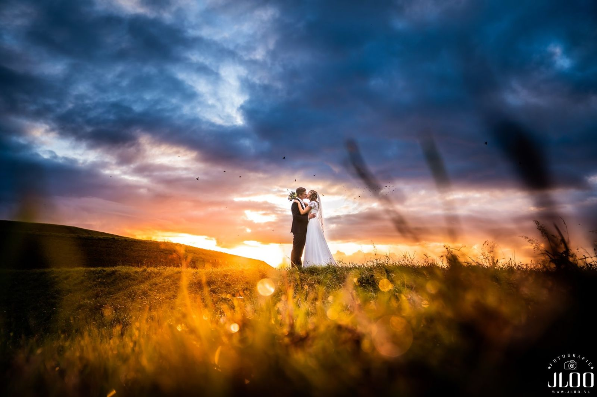
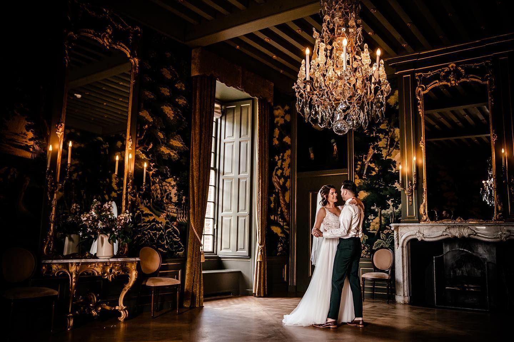
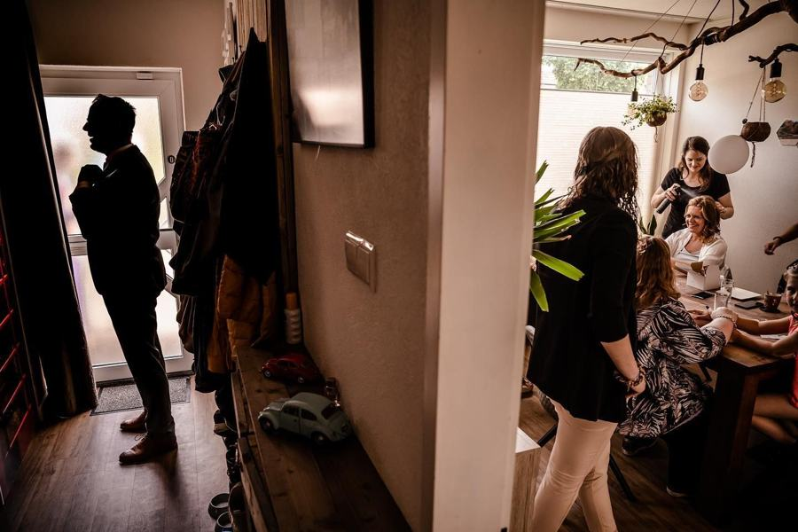
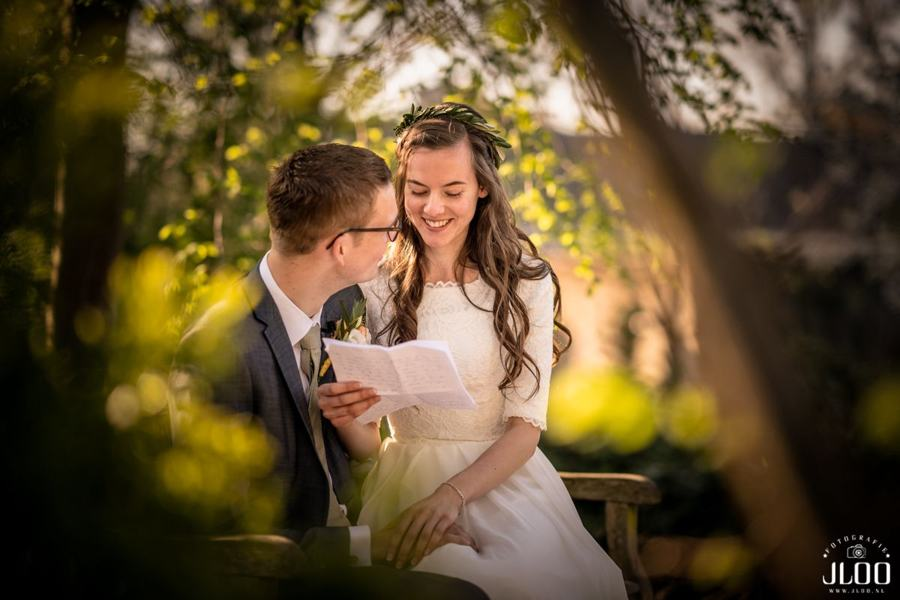
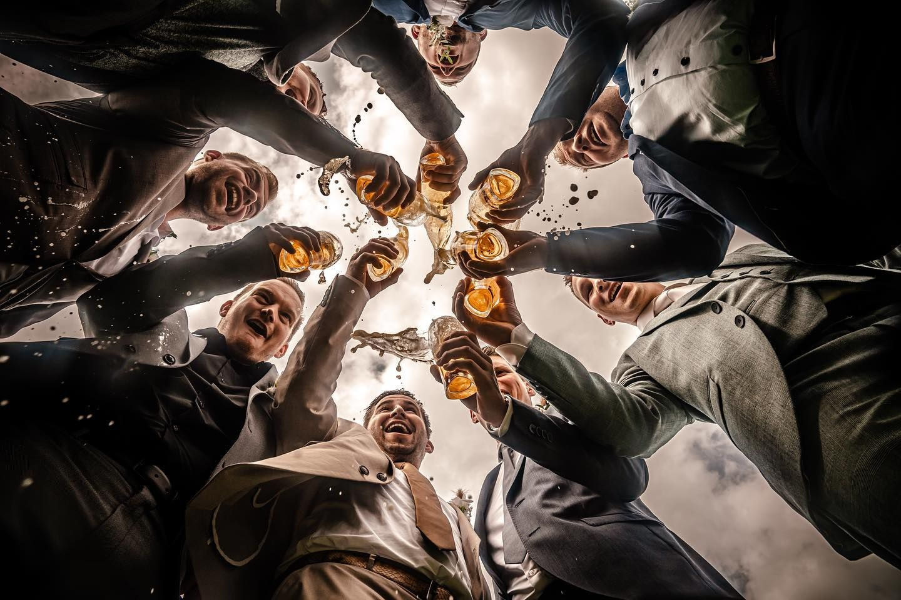
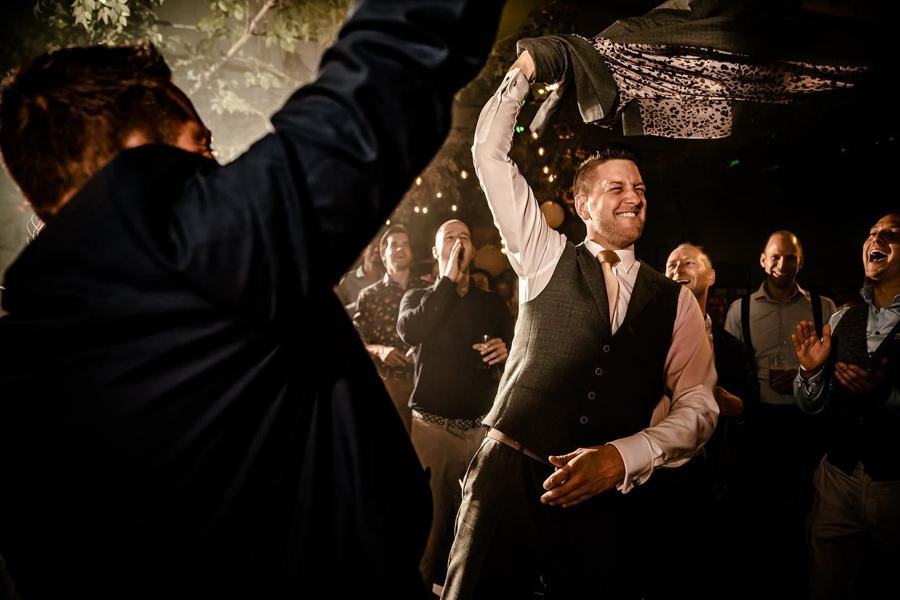
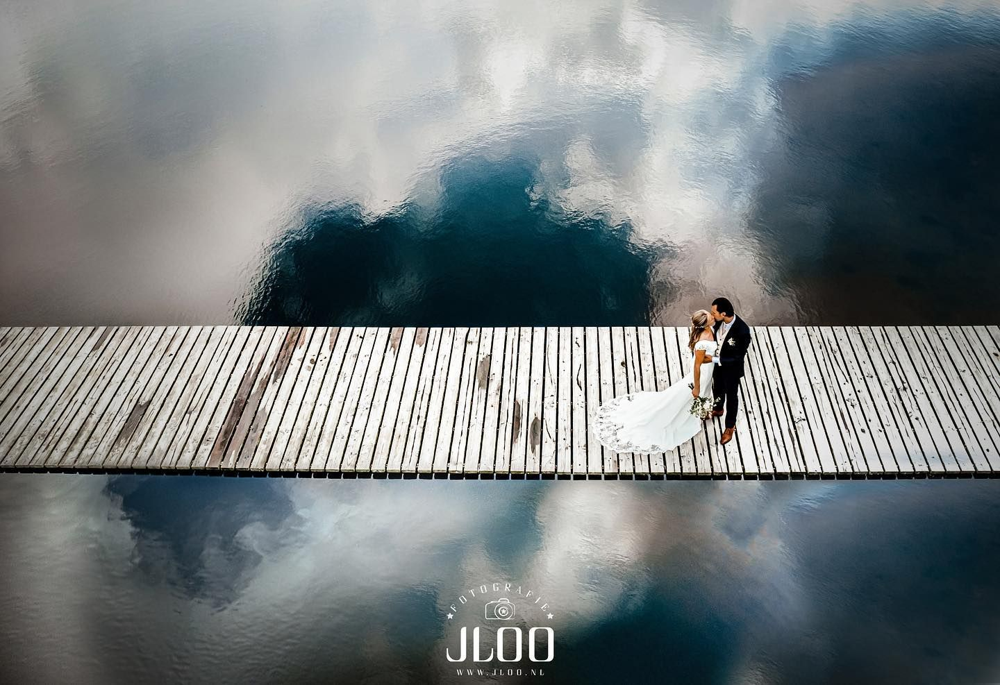

Bruiloft
Jullie dag. Zoals hij écht was.
Bruiloftsfotografie
Fotograaf Jeffrey van der Loo · internationale award bruidsfotografie
Geen gemaakte poses of geforceerde glimlachen. Jeffrey legt jullie dag vast zoals hij is: de zenuwen in de ochtend, de blik bij de eerste ontmoeting, de tranen bij de speeches en de dansvloer die volloopt.
Hij werkt onopvallend, met geruisloze camera’s, zodat jullie en je gasten zichzelf kunnen zijn. Van het opmaken tot de opening van het feest, of je nu trouwt in Brabant, Groningen of Italië.



Onopvallend aanwezig, voor een opvallend beeld.
We zijn er al vanaf het begin van de dag. Daardoor zijn we geen vreemden meer als het spannend wordt, en zie je die rust terug in de foto’s.
De eerste beelden krijgen jullie dezelfde dag of de dag erna als diashow. Zo blijf je nog even op die roze wolk.









Praktisch
Alles voor jullie dag.
Jullie krijgen niet alleen 200 bewerkte favorieten, maar ook alle onbewerkte foto’s in de hoogste resolutie. Zo kun je de hele dag nog eens beleven.
Een trouwalbum in linnen of leer, drone-beelden en een videograaf van DeTrouwClip.nl zijn mogelijk.
Pakket
vanaf€1.700
- 6 uur fotografie · €1.700
- 12 uur fotografie · €2.000
- Inclusief drone-beelden
- 200 bewerkte foto’s naar keuze
- Alle onbewerkte foto’s in hoge resolutie
Extra uur €130 · selectie door ons €650 · trouwalbum €590 · mini-album €35 · USB €30


Kennismaken
Vertel ons over jullie moment.
Een trouwdatum, een uitgerekende datum of gewoon een idee: stuur ons een berichtje. We reageren binnen 24 uur en nodigen jullie graag uit voor een kop koffie in de studio.
gemeente Heusden